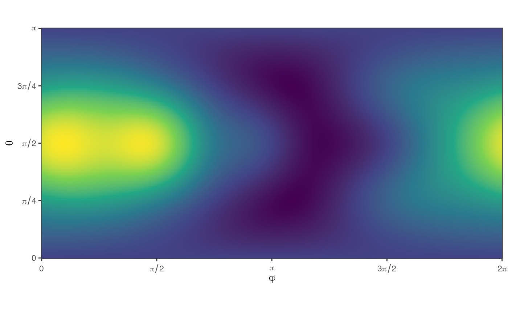

vignettes/Untitled.Rmd
Untitled.Rmdcubs is a utility package to wrap several commonly-used spherical cubature rules in a convenient interface:
LebedevSpherical t-DesignsGauß-LegendreFibonaccigridQuasi Monte-CarlorandomYou can install from GitHub with:
# install.package('remotes')
remotes::install_github('nano-optics/cubs')Let’s request a Lebedev cubature with approximately 15 points,
cubs(N = 10, 'lebedev')| phi | theta | weight | |
|---|---|---|---|
| 1 | 0.0000000 | 1.5707963 | 0.0666667 |
| 2 | 3.1415927 | 1.5707963 | 0.0666667 |
| 3 | 1.5707963 | 1.5707963 | 0.0666667 |
| 4 | -1.5707963 | 1.5707963 | 0.0666667 |
| 5 | 1.5707963 | 0.0000000 | 0.0666667 |
| 6 | 1.5707963 | 3.1415927 | 0.0666667 |
| 7 | 0.7853982 | 0.9553166 | 0.0750000 |
| 8 | 0.7853982 | 2.1862760 | 0.0750000 |
| 9 | -0.7853982 | 0.9553166 | 0.0750000 |
| 10 | -0.7853982 | 2.1862760 | 0.0750000 |
| 11 | 2.3561945 | 0.9553166 | 0.0750000 |
| 12 | 2.3561945 | 2.1862760 | 0.0750000 |
| 13 | -2.3561945 | 0.9553166 | 0.0750000 |
| 14 | -2.3561945 | 2.1862760 | 0.0750000 |
Let’s try a known integrand,
\[ f_{1}(x, y, z)= 1+x+y^{2}+x^{2} y + x^{4}+y^{5}+x^{2} y^{2} z^{2} \]
with the usual spherical coordinates,
\[\begin{align} x = &\cos(\varphi)\sin(\theta)\\ y = & \sin(\varphi)\sin(\theta)\\ z = & \cos(\theta). \end{align}\]
We want to estimate the integral \[ I = \frac{1}{4\pi}\int_0^{\pi} \int_0^{2\pi} f(\varphi,\theta) \sin\theta\, \mathrm{d} \varphi \mathrm{d} \theta . \] numerically, i.e. with a spherical cubature \[ I \approx \sum_{\varphi_i,\theta_i}^{i=1\dots N} f(\varphi_i,\theta_i) w_i, \]

We compare the exact value, \(216 \pi / 35\), to the Lebedev cubature for increasing number of points.
| source | value |
|---|---|
| lebedev N=14 | 19.5476876223365 |
| lebedev N=26 | 19.3881146621542 |
| exact | 19.3881146621542 |